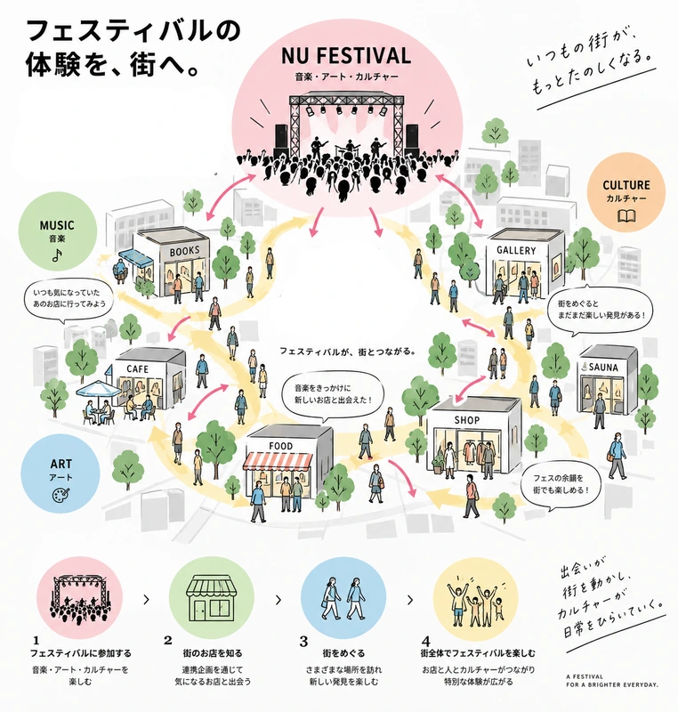
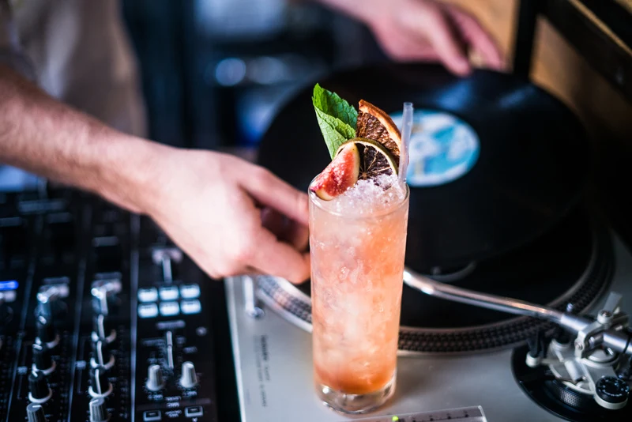
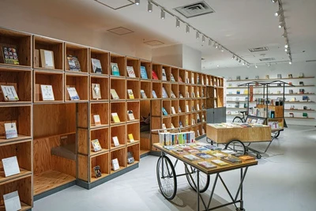
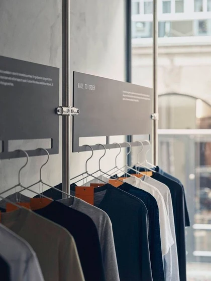
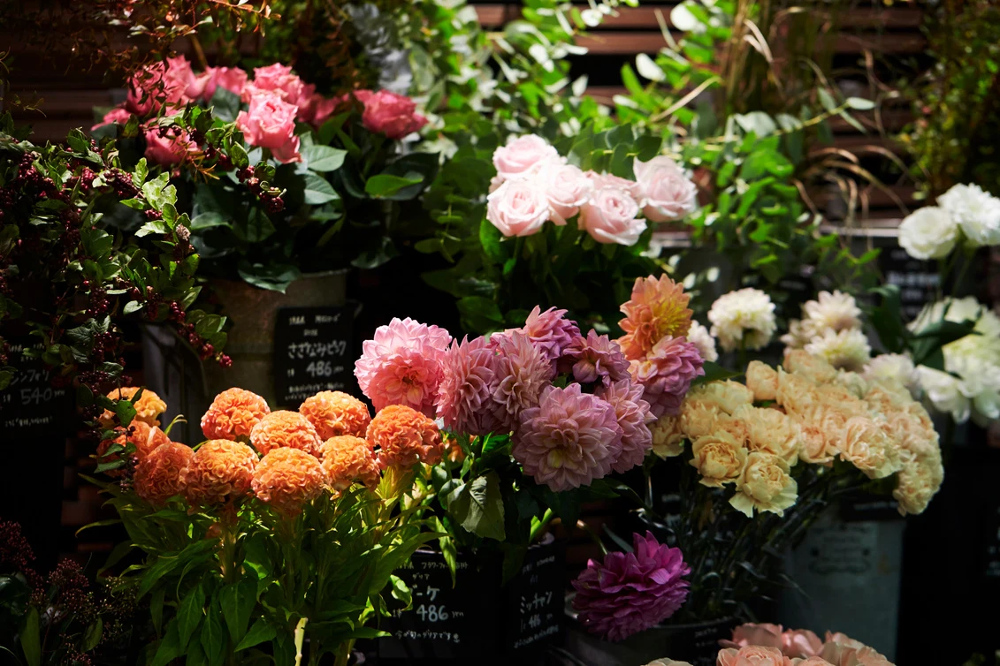

TAKANAWA GATEWAY CITY
街区・施設店舗連携プログラム
NU CONNECT
フェスティバルが人とお店をつなぐ。
各街区の商業施設や店舗と、音楽・アート・カルチャーを通じて協働するプログラム。店内や施設の空間を活かした企画をきっかけに、来場者が街を巡り、お店と出会う機会をつくります。
NU CONNECTの仕組み

施設・店舗との連携
OIMACHI TRACKS
大井町トラックス参加店舗
参加店募集インスタレーション、トーク、DJ、店内プレイリスト、特別メニューなどを、店舗ごとの空間や営業スタイルに合わせて企画します。
大井町のエリアコンセプト店舗の参加アイデア

飲食・カフェ
アーティストによる店内BGMの選曲、パークへのポップアップ出店、音楽に合わせたカクテル、DJやリスニングイベント。

書店・カルチャー
アーティスト選書、音楽と朗読、本とアートの展示、ミニライブ。

ファッション・セレクトショップ
限定グッズの共同開発、アーティストとのコラボアイテム、ウィンドウ・インスタレーション、インストアイベント。

フラワー・インテリア
花と音のコラボレーション、生花と音楽を組み合わせた店内展示、リスニングとフラワーワークショップ。